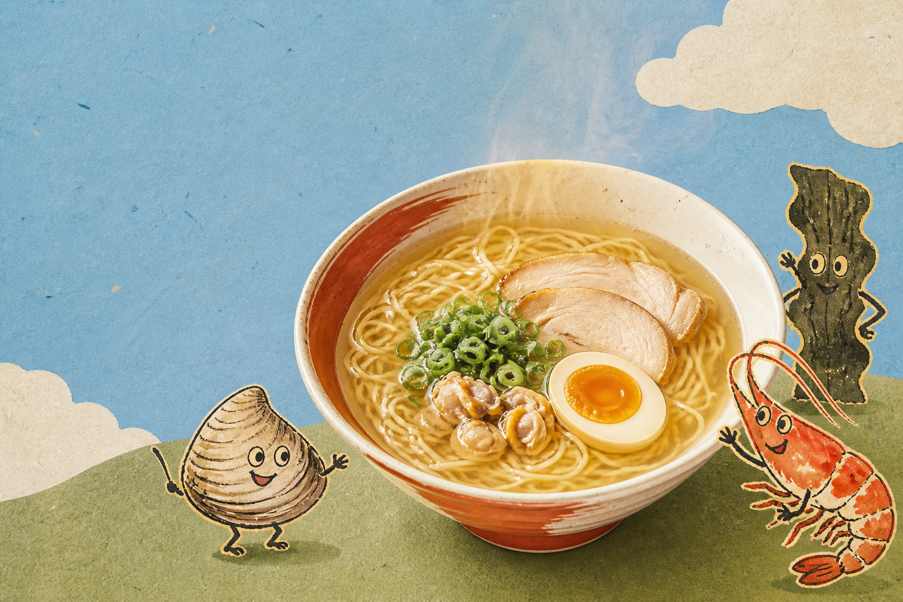

◯
あさり塩
澄んだ旨みと、柚子の香り。

OUR STORY
うみの音は、海の素材をていねいに重ねる架空のラーメン工房。派手な濃さではなく、最後のひと口まで飲みたくなる余韻を目指しました。
3 FLAVORS
澄んだ旨みと、柚子の香り。
香ばしさとコクを、まろやかに。
だしの甘みが続く、端正な味。
SECRET 01
あさりのふくらみ、えびの香ばしさ、昆布の長い余韻。三つを一度に煮立てず、それぞれの良いところが重なる順番で仕立てます。
SECRET 02
つるりとした口当たりと、ほどよい歯切れ。だしをまといやすい細さに整え、すすった瞬間の香りまで設計しました。
HOW TO ENJOY
おすすめ：柚子皮、白ねぎ、半熟たまごを添えて。
ONLINE STORE
三つの味を2食ずつ。はじめての方にうれしい食べ比べセットです。
FAQ
基本の三商品に強い辛みはありません。お好みで七味やラー油を加えてください。
架空商品ですが、設計上は製造から常温で6か月を想定しています。
季節の掛け紙を選べる想定です。デモのため実注文には対応していません。